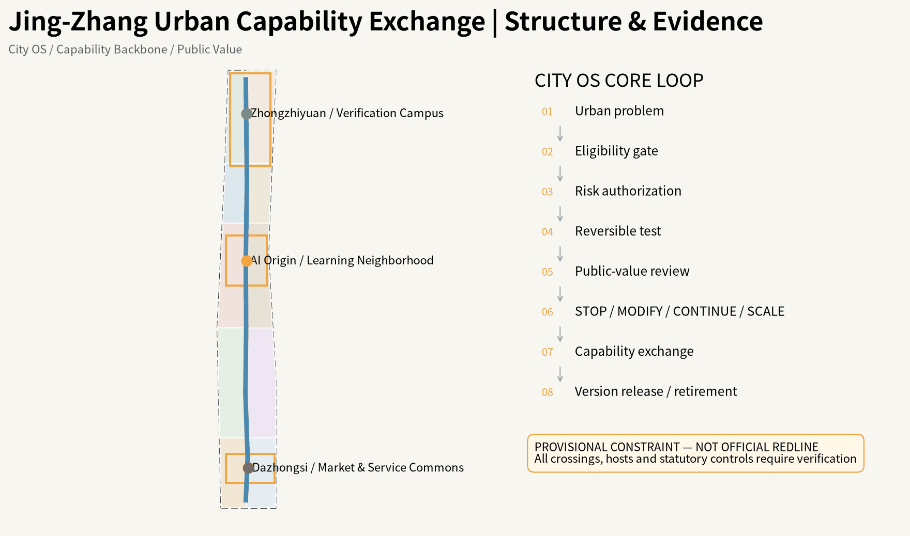
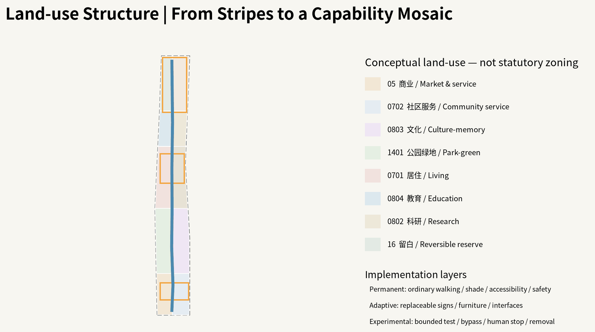
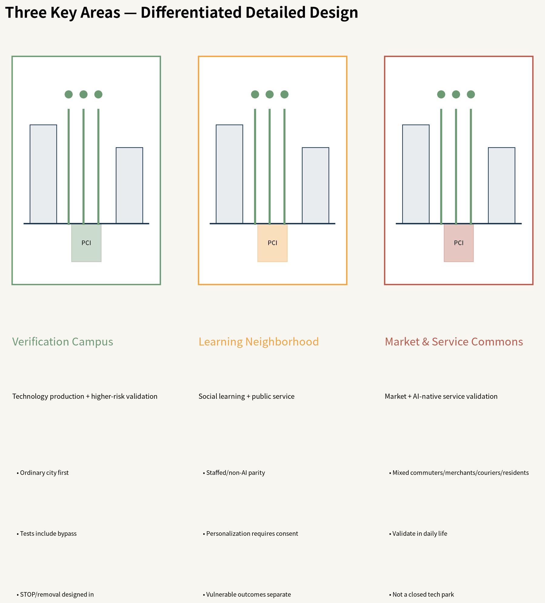
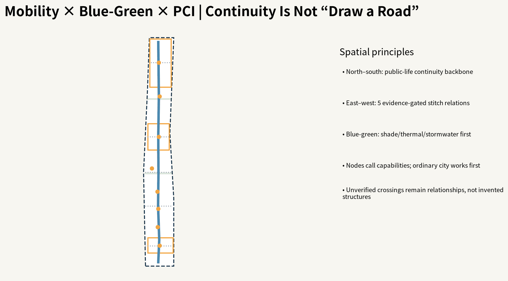
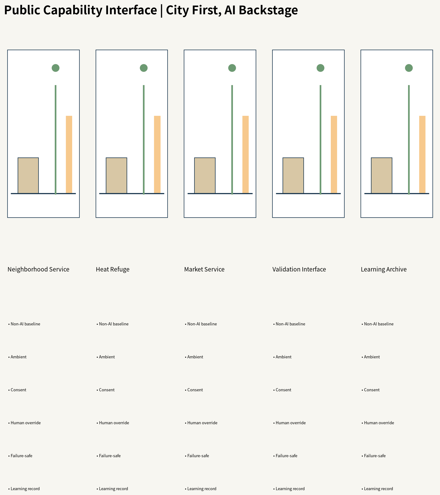
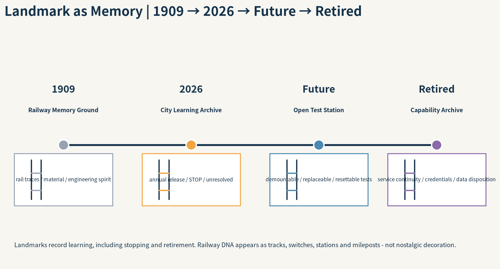
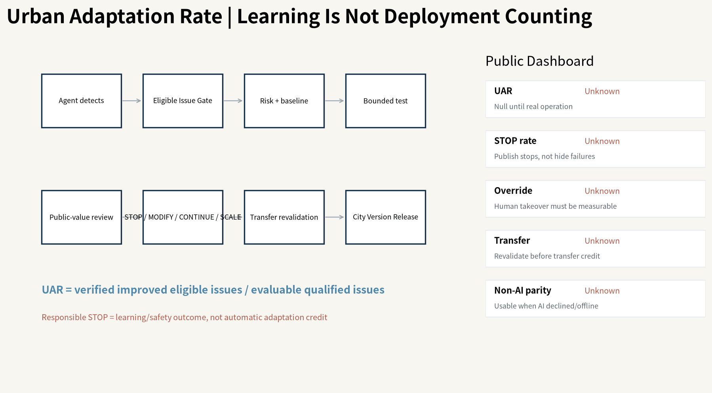
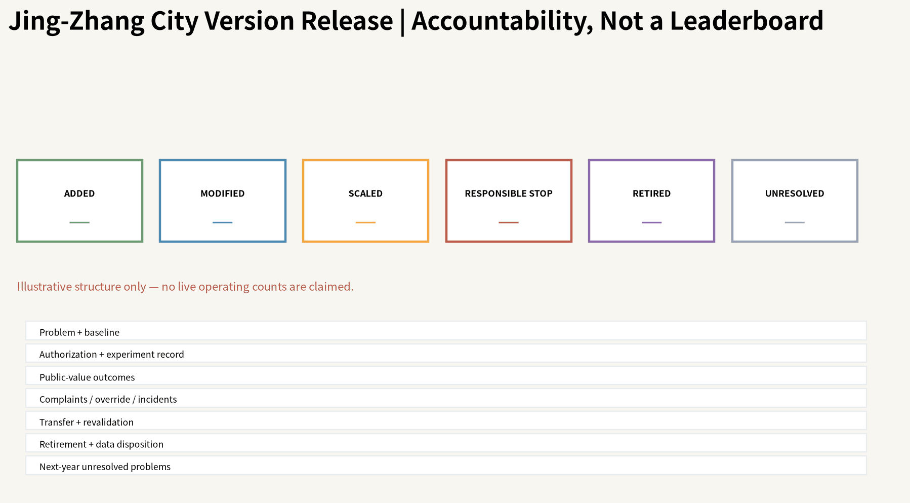
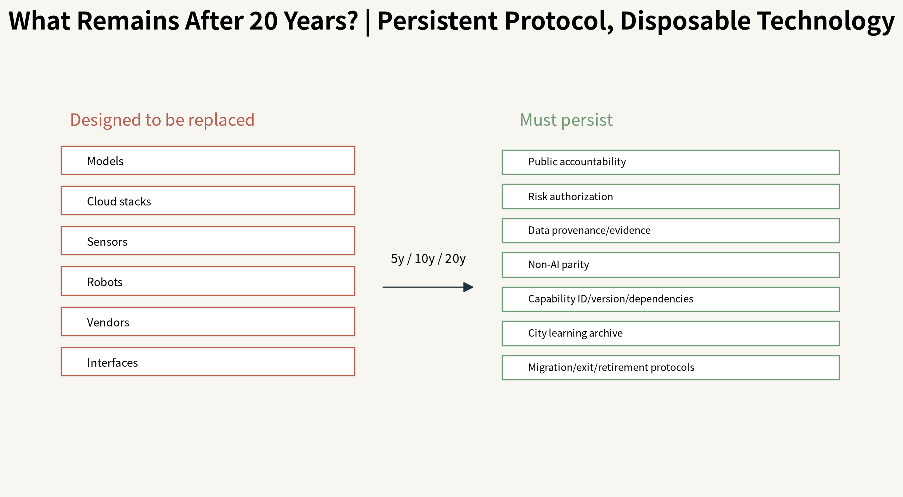

Overview Map · Three-Level Scope

Land Use · Buildings

Key Areas

Transport & Walking · Blue-Green Public Space

Public Capability Interface

Landmark as Memory

AI Scenarios · UAR

City Version Release · Renewal Projects

20-year Legacy

Core Metrics · Task Coverage
11.413 km²provisional site
10.37%proposed green
0.45%PCI/landmark envelopes
12 / 8 / 4scenarios / personas / bounded tests
Self-Check Status · Sources · Assumptions
Participant-side package regenerated. Live OSM/Microsoft materialization is the only execution-environment blocker and is explicitly kept unverified.
OfficialVerifiedDerivedAssumedUnknownKnownEstimatedProposed
sources.json · assumptions.json · metrics.json · compliance_matrix.json · standard_matrix.json · design_depth_matrix.json